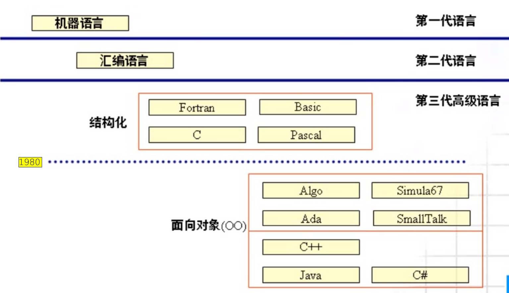
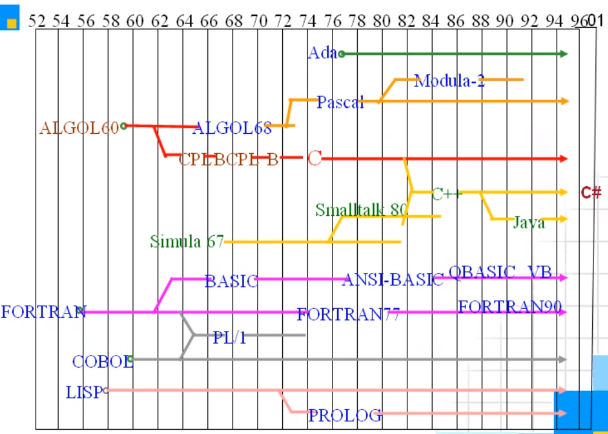

郝斌 C 语言学习：概述、预备知识
https://www.bilibili.com/video/BV1os411h77o
自学
刚开始学习基础时，两行代码之间是逻辑关联的；但是学习高阶代码时，因为两行代码中进行了大量封装，所以两行代码之间可能就没有明显的逻辑关联。
学习知识 A 时的思考：
- 为什么需要 A
- 什么是 A
- 怎么用 A
- 注意的问题
- A 应用的领域
- A 是否重要
仅以入门为目的，可以看看谭浩强、林锐、王爽。
为什么出视频
作者认为一个人成功的几个必备要素（重要性排序）：
- 时代
- 出身
- 机遇
- 勤奋、天赋（针对个体而言）
苦于没有入门资料，想出视频让更多想自学的人，有收获。
C 概述_内容概述
- 为什么学习 C 语言
- C 的起源和发展
- C 的特点
- C 的应用领域
- C 的重要性
- 怎么学 C
- 学习的目标
- 常见问题答疑
- 学习 Java 为什么建议先学 C
- 没学过计算机专业课，怎样学懂 C 语言
- 英语和数学不好，怎样学懂 C 语言
- 课程计划
HelloWorld
#include <stdio.h> /* This is a comment */ int main() { printf("Hello, world!\n"); return 0; }
gcc -o helloworld helloworld.c ./helloworld
C 的起源和发展
 
C 的特点
优点：代码量小、速度快、功能强大
缺点：危险性高、开发周期长、可移植性不强
C 语言的指针使 C 语言可以访问硬件。
C 的应用领域
- 系统软件开发
- 操作系统
- 驱动程序
- 数据库
- 应用软件开发
- 办公软件：WPS
- 图形图像多媒体
- 嵌入式软件开发
- 游戏开发
C 的重要性
- 最重要的系统开发语言
- 一个合格黑客必须掌握的语言
- 想终身从事程序设计和开发的人员，必须熟练掌握的语言
- 为学习数据结构、C++、Java 打基础
病毒、木马
内存泄漏
怎么学习 C
- 多思考、多敲代码
看书：
- 谭浩强《C 语言程序设计》（好与不好，自己读过才知道，道听途说、轻信不可为）
- The C Programming Language
- C Primer Plus
- C 和指针
- C 专家编程
- C 陷阱与缺陷
学习目标
- 了解程序语言及发展历史
- 熟练掌握 C 语言的语法规则
- 掌握简单算法
- 理解面向过程的思想，为以后学习面向对象铺垫
- 能看懂程序
- 会调试程序
- 掌握将大问题转化成一系列小问题来求解的思想
- 为学习 C++、数据结构等打基础
课程大纲
C 语言预备专业知识
1，CPU、内存条、硬盘、显卡、主板、显示器之间的关系
1）需要访问某个文件时，操作系统会将文件数据调入内存中；由于 CPU 与硬盘运行速度的巨大差异，CPU 不能直接处理硬盘数据
2）CPU 处理内存中的文件数据
3）将处理结果根据文件类型发送给显示器、显卡……
4）主板将 CPU、内存条、硬盘等实体，通过总线连接在一起
2，HelloWorld 如何运行
1）编译
2）链接
3）操作系统调用 CPU 执行可执行文件
3，什么是数据类型
1）基本类型
- 整数
- 整型 int 4 字节
- 短整型 short int 2 字节
- 长整型 long int 8 字节
- 浮点数（实数）
- 单精度 float 4 字节
- 双精度 double 8 字节
- 字符 char 1 字节
2）复合类型
- 结构体
- 枚举（这是主要，其余两个不常见）
- 共用体
4，什么是变量
变量的本质就是内存中一段存储空间。
#include <stdio.h> int main(void) { int i; i = 3; ... }
定义一个整型变量 i，然后将 3 赋给 i。问题是， 3 被存放在哪个物理实体里了？内存。
当程序运行时，CPU 处理内存中的变量 i（此时 i 为 3）； 当程序运行结束，内存中存放 3 的地址被释放。
5，CPU、内存条、应用软件、操作系统之间的关系
应用软件请求操作系统，在内存条中分配一段地址空间；程序运行时，CPU 对数据进行处理。
6，变量为什么需要初始化
- 「初始化」就是赋值
- 如果定义变量但未初始化，变量会被赋给一个任意值，且不更改，除非重新定义
- 机器重启之后恢复平时使用的状态的原因：重启后，内存的电位全部为低电位
- 「释放」，内存空间重新开放给程序使用
为什么视频中通过 VC++6.0 运行以下代码的结果是一个很大的任意数，而我的却是 0？
视频中接下来说了原因：微软的这个 VC++6.0 软件，在设计时考虑到未初始化的情况。软件会自动为未初始化变量添加一个「填充字」，一般是 -8 开头的长串数字。提醒开发者，当前变量未初始化。
代码：
#include <stdio.h> int main(void) { int i; printf("i = %d\n", i); return i; }
背景：
视频中使用的操作系统为 Windows（可能是 XP），时间是 09 年 10 月，软件使用的是 VC++6.0；我使用的操作系统是 Arch Linux，时间是 21 年 12 月，在命令行使用 gcc（版本号为 11.1.0）编译。
7，如何定义变量
数据类型 变量名 = 要赋的值;
等价于
数据类型 变量名;
变量名 = 要赋的值;
8，什么是进制
- 进制就是逢几进一
- 十进制-逢十进一
- 二进制-逢二进一
- C 语言规定八进制前加 0（是零，不是字母 o），十六进制前加 0x 或 0X，十进制前什么都不加
- 一年 12 个月-十二进制
- 一周 7 天-七进制
- 一天 24 小时-二十四进制
进制转换表：
printf 的用法：
- %d 十进制输出
- %x 十六进制输出
- %o 八进制
思考表象后的本质。
9，常量在 C 语言中是如何表示的
常量分为整数和浮点数。
整数
- 十进制：传统写法
- 十六进制：前面加 0x 或 0X
- 八进制：前面是数字 0（零）
浮点数
- 传统写法：float x = 3.2;
- 科学计数法：float x = 2.1e3; 2100 float x = 12.23e-2; 0.1223
在 C/C++ 中，实数默认为 double 类型，如果需要使用 float，要这样写 float x = 2.1e3F;
字符
- 单个字符 'a', 'b', 'c'
- 字符串 "abc" "A"(但是，这样写是对的，它表示：'A' '\0')
10，常量以怎样的二进制代码存储在计算机中
编码
- 整数是以补码的形式转化为二进制代码在计算机中存储；
- 实数是以 IEEE754 标准转化为二进制代码在计算机中存储；
- 字符的存储方式与整数的相同（字符–>ASCII 码（整数））
代码规范化
- 编码成对
if ()if 与之后的括号要有空格，便于与函数区分；运算优先级越低，它的符号附近需要加空格- 缩进：同等地位不需缩进
- 换行：通过换行区分以下程序的三部分；相对独立也可以换行（if…else if…else…）
程序的三部分：
- 定义变量
- 对变量进行操作
- 输出值
为什么会有 return 0; 存在？
什么是字节
字节（byte）是存储数据的单位，并且是硬件能访问的最小单位
- 一个字节存储 8 个标志位
- 1k = 1024 字节
- ……
硬件只能控制到字节，通过软件（位运算符）精确到位
不同数据类型之间相互赋值
学习这个知识点，需要知道「补码」。
什么是 ASCII
它规定不同字符使用哪些整数值表示。
char 使用常见问题解析
#include <stdio.h> int main() { char ch = 'A'; // OK char ch = "A"; // error, "A" <=> 'A' + '\0' char ch = "AB"; // error, string cannot be assigned to single variable printf("%c", ch); // output string return 0; }
- 单引号只能找到包裹单个字符
- 多个字符必须用双引号